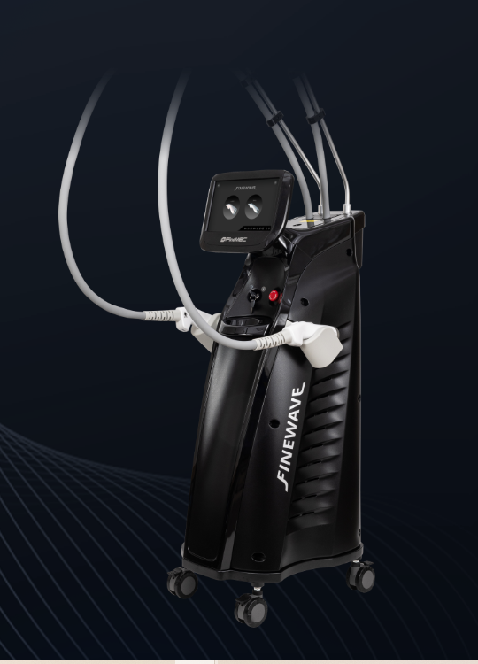
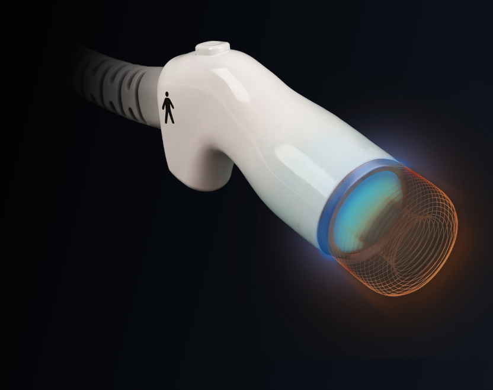
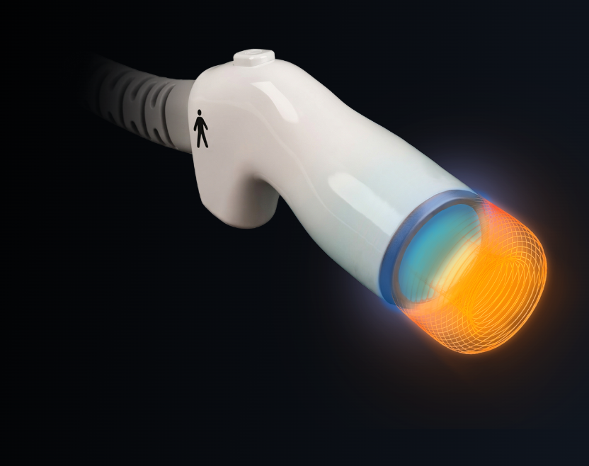
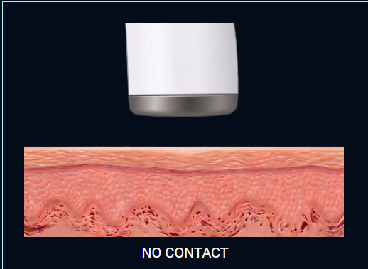
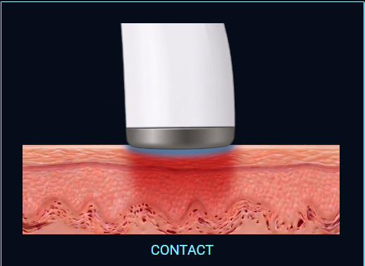

파인웨이브는 피부 표면은 안전하게 보호하면서,
2.45GHz 극초단파 에너지를 타깃층에 전달하는 의료 장비입니다.



펠티어(Peltier)와 칠러(Chiller)를 결합한
FINECOOL 이중 냉각시스템은
장시간 고출력 시술에서도 보다 안정적이고
편안한 시술 환경을 제공합니다.
피부 접촉 시에만 전달되는 마이크로웨이브 에너지
실시간 피드백 시스템으로 안정적이고 정밀한 출력 제어

